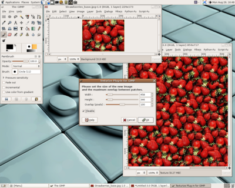

<< Back to the main page
How To
How to use the plugin
Using this plugin is pretty straightforward. Once it is installed, you
will find it in Gimp, from the "Filters" menu, then the "Map"
category.
For your first use, try not to use too large an image (200 x 200 is a
good start) and stick to the default values. Then you can ask for larger
images and higher overlaps (see the next paragraph), when you know
approximately how long the rendering is going to take.
You only need to set four parameters:
- the width of the new image you want Texturize to produce (by
default, it is equal to two times the width of the original image);
- the height of the new image;
- the amount of overlap (in pixels) between patches. The
program duplicates the original image and patches it in several places
(with quite a complicated placement strategy) on the new image. You can
ask two given patches to have only a few pixels in common, or you can
ask them to have more in common, so that the program can use a larger
area to determine where it is best to place the new pacthes. Anyway, you
only need to remember this: a larger overlap makes a better texture,
but a longer rendering time. Also compare the overlap you want
to set with the dimensions of the original image.
- whether you want the texture to be tileable or not. This means the
right side of the image corresponds to its left side, and its top side
to its bottom side, so that you can tile the image and still get natural
textures.
Once these three parameters are set, just click "OK". If you asked for a
large image, or a high overlap, you should go drink a coffee (it can
take several minutes)!
Small tips
If you want to create really large images from a small sample, it is
usually a better idea to run the Texturize plugin several times : create
a middle-sized image using the plugin, then run the plugin again on this
middle-sized image (you can even take more than two steps if you want a
really large image, but the result might not be as natural as you
could hope). See the "More tulips" and "More grass" images in the examples section.
If you can't get a great result the first time, try to run the plugin
again, changing the parameters (including width and height) to get
a better result.
You will need a high overlap for images that have long range structures,
like "Blanket" or "Escher horses" in the examples section.
Screenshot
